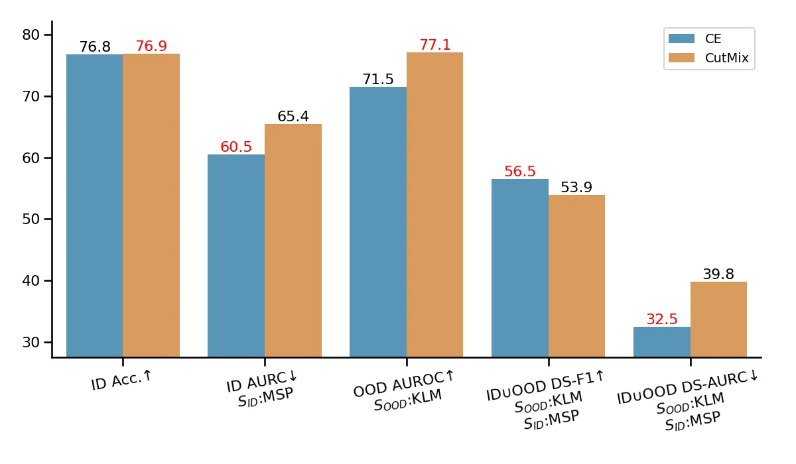
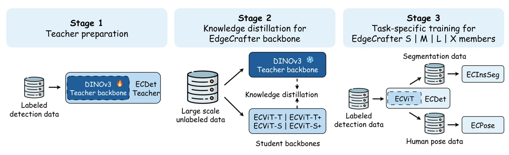

From Misclassifications to Outliers: Joint Reliability Assessment in Classification
把误分类检测与分布外检测放进统一风险建模框架，同时判断模型是否可能答错，以及输入是否偏离已知分布。
项目主页算法高级工程师J&T Express
我从事计算机视觉研究与工程，主要关注 OOD Detection、Failure Prediction 和开集识别，也负责分类、人脸、Re-ID、检测与分割模型的训练、评估和部署。
武汉大学，测绘工程本科与硕士。
分类可靠性、边缘视觉与三维重建。

把误分类检测与分布外检测放进统一风险建模框架，同时判断模型是否可能答错，以及输入是否偏离已知分布。
项目主页
面向资源受限设备，在计算开销、模型容量与任务性能之间进行系统权衡。
项目主页用 prompted zigzag 机制重组特征交互路径，增强模型区分正常样本、错误预测和异常输入的能力。
从建筑目标提取、结构推断到几何表达生成，探索单张卫星影像的自动化三维重建流程。
统一考虑误分类、分布外输入和开集样本，让模型的置信度真正反映风险。
OOD Detection / Failure Prediction / Open-set Recognition
覆盖分类、人脸、Re-ID、检测与分割，从数据到部署完成闭环。
建设训练框架与自动化标注平台，缩短样本回流和模型迭代链路。
算法高级工程师
计算机视觉算法工程师
负责 AI 安防场景中的算法研发与部署，主导或参与人脸识别、分类可靠性、Metric Learning、检测、分割和自动标注平台建设。
测绘工程 本科 / 硕士
从测绘工程延伸到视觉感知、三维重建与深度学习研究，形成面向工业场景的算法工程能力。
开集识别赛道冠军，担任团队负责人。
SSB-OSR6 项发明专利申请进入实质审查阶段。